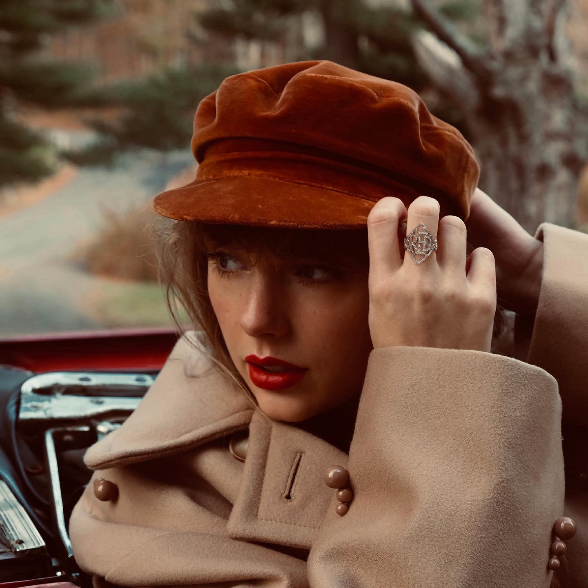
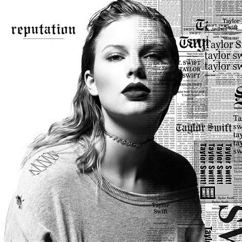
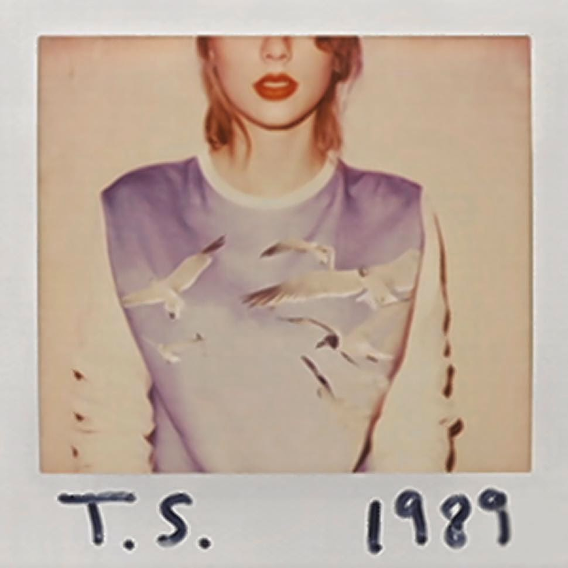
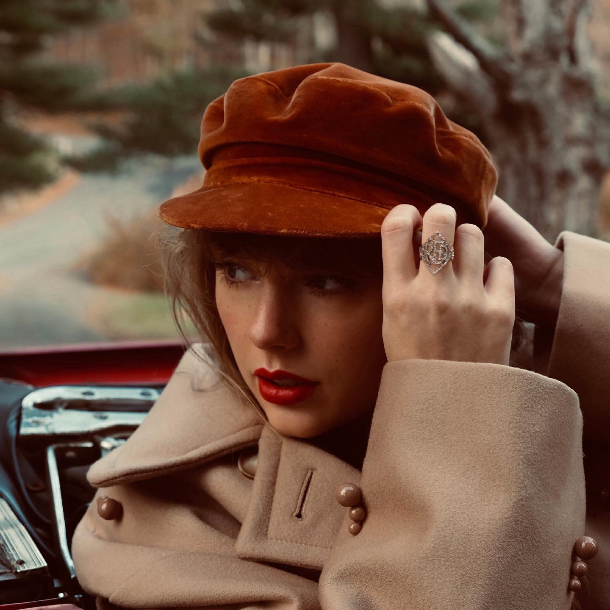
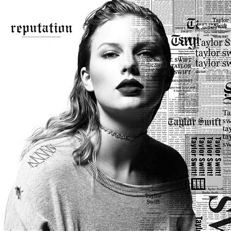
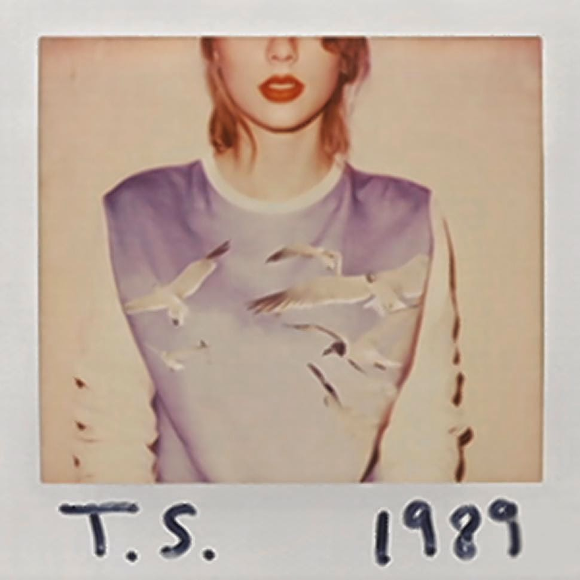
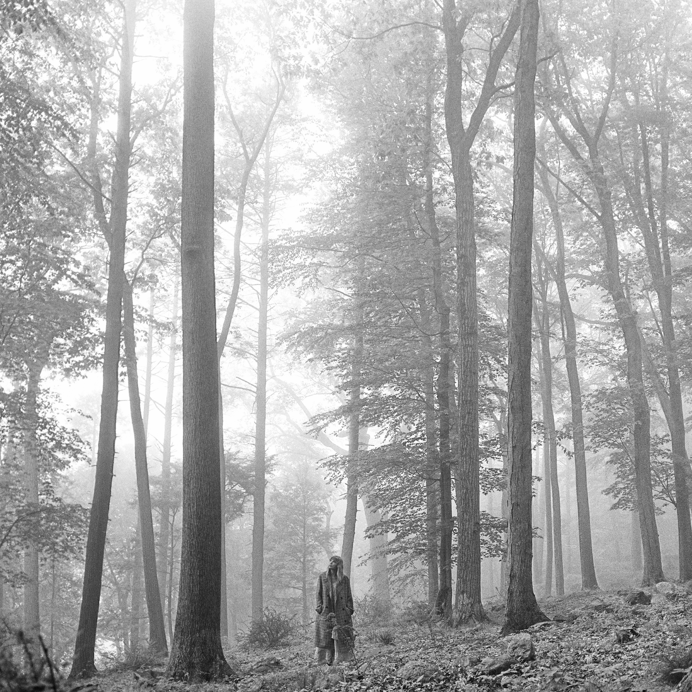
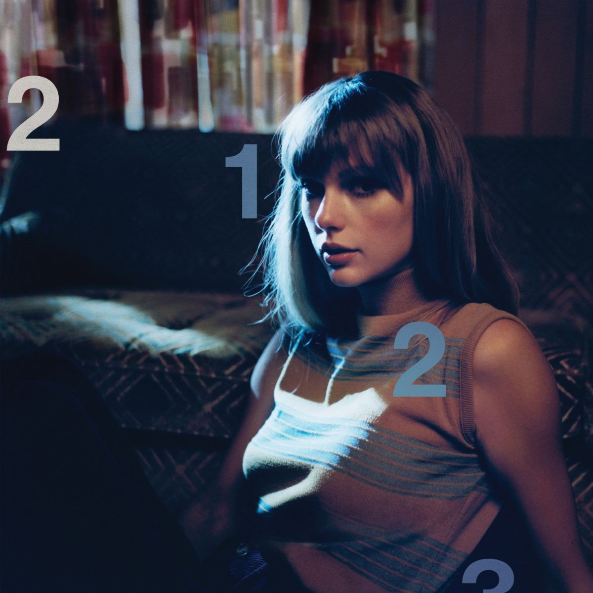
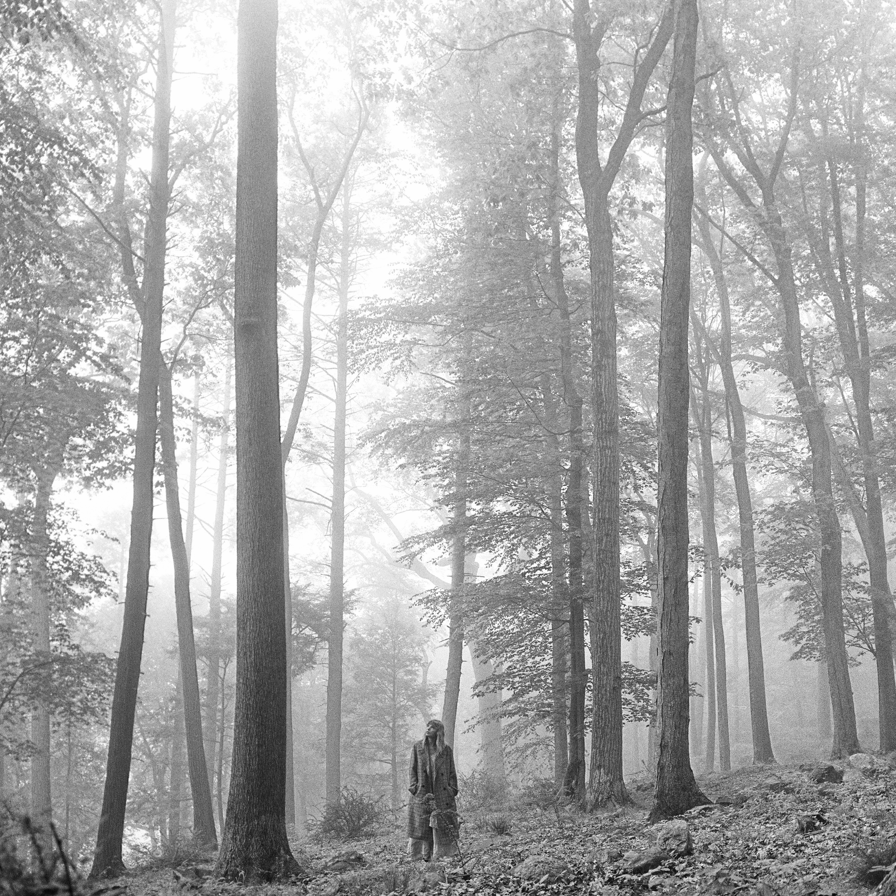
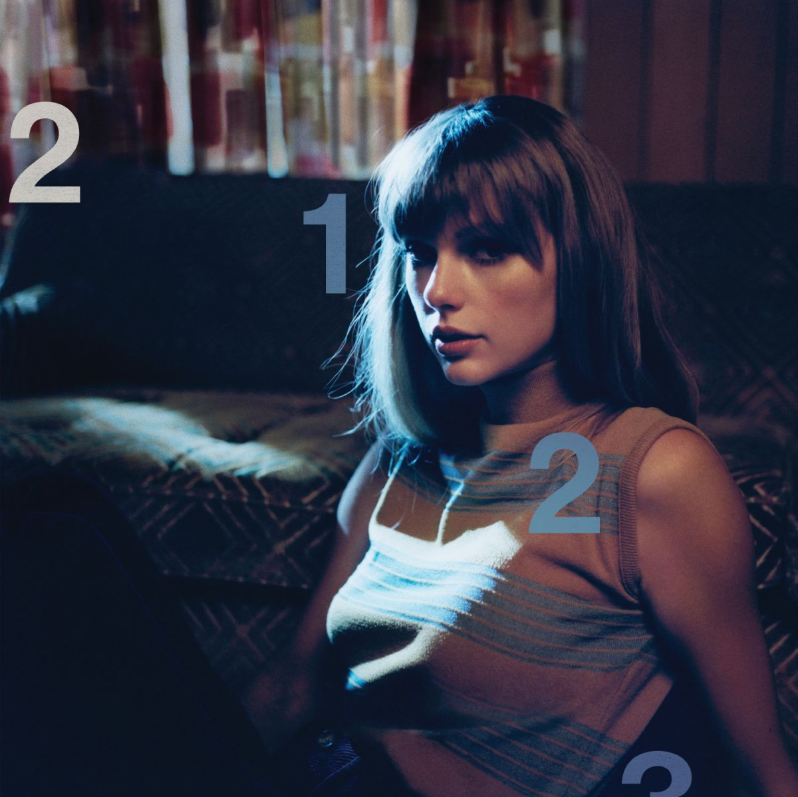

 



.jpeg)
23 November 2022
Maroon
I noticed another mention of red when she said something about ruby eyes. Felt rewarding to catch that. Gave me a bit more of that feeling I love getting from music. Love it when music makes me feel smart for paying attention to it.
Mastermind
seems like a really manipulative song. I noticed the lyric
"This is the first time i've felt the need to confess"
last week and that made me like the song a lot more. Listening to it now- I can see the story that's being painted. It feels like an admission of manipulation- a confession- as put in the song. I think I really like songs about the acceptance of what is and what has been and recognizing misdeeds and confessing them.
She sings about the role women have played in the game of romance over time too- "You see all the wisest women had to do it this way, cause we were born to be the pawn in every lovers game"
ding ding ding. She's hinted at and nailed something I think is very true. The art of seduction has been probably the most powerful tool for women throughout history. Girlboss. Gaslight. Gatekeep.üíÅ‚Äç‚ôÄÔ∏è
16 November 2022
I've reached a point I both expected and feared. I've listened to enough of her music to get bits and pieces stuck in my head but I don't know it well enough to know what song it's from when it plays back in my head and I want to go listen to itüôÉ.
I love the ship imagery that Taylor uses too. Evermore and Willow are what remind me of that. Guess i'm a sucker for ship references too.
14 November 2022
Today I listened to a lot of evermore and call it what you want. I don’t remember on call it what you want but while listening to evermore i felt goosebumps and a wave of good feeling. Moments like that are so often what I crave listening to music. There’s an idea that beauty and within beauty- music is one pathway to the divine. Maybe that’s what I felt. A sort of connection with the divine.
London Boy
british "people"Evermore
Dang. Bon iver hits different here. The song before that is really nice. A lovely slow song. When he shows up i feel it. I don't remember the name for it, but i'm definitly a sucker for songs with multiple vocal parts at once.
The best day:
Makes me want to be a good dad
Tolerate it:
Where’s the man who threw blankets over my barbed wire
I remember hearing this idea and I can't easily find the source, but it's that people often put up barriers in hopes that the one they love will break them down- even in a non romantic but close relationship. The barrier becomes a test of care. Something to conquer to show love.
1989 notes
I was wrong- heard the really popular ones before. 5 of them.
I'm starting to see the web of connections in Taylor's music. The picture is starting to be painted for me. Understanding a reference to another song helps deepen the ideas of both songs.
12 November 2022
Welcome to new york:
new york kinda seems like a hellhole (save it be long island)but song is goodüëç
blank space:
I just remember my brother playing this over and over and over in 2015 or 16. Very familiar with it as a result. Feels really pop-y and that's sort of a turn off but I enjoy it.
Style:
first minute: fantastic
The chorus: i've heard to death.
I can't help but really enjoy the other parts though
out of the woods:
see comments below
all you had to do was stay:
Shake it off:
üòêüòêüòê hard to enjoy
I wish you would:
Bad Blood:
also heard this one a good bit before.\
Widest dreams:
familiar with this one too but I like it now after actually listening to the lyrics.
How to get the girl:

fr tho- This song's bumpin. Love the sound of it.
This love
I can't remember this song.
I know places
I like the aesthetic but I don't understand what it's about.
Clean:
Also can't remember this song. Maybe I'll appreciate it later.
Wonderland and you are in love
again- haven't gotten caught in my head yet.
New romantics:
favorite lyric- "the best people in life are free"
Still the 12th but no longer 1989
Mean:
Too country for me. but this lyric "But you don't know what you don't know" calls me back to this idea- "Remember that what you do not yet know is more important than what you already know". That being brought to mind felt good.
Cardigan:
Makes me think about learning how old taylor swift and it clicking
how young she was when she became a hit and started releasing
professional music. That's really impressive.
The part I care a lot more about is the part where the cardigan is
mentioned.
"And when I felt like I was an old cardigan Under someone's bed
You put me on and said I was your favorite"
That seems like the heart of romantic love. Feeling like you're
someone's #1 pick- in spite of your flaws. This song really pricks
that for me emotionally.
The song also explores a place where someone isn't whole
hearted in his or her pursuit of loving someone else- or maybe
more accurately isn't willing to give up all other potential love
for a single person.
The peter pan reference later in the
song feels perfect. Peter pan wouldn't give up his potential for a
something real- a relationship with wendy and he ended up with
nothing real as a result. He never grew up.
Bence’s midnight notes (started at 12:46pm on 25 October 2022 and probably more about 3am version)
Ammended 5 November 2022
Pre (review) Fit check:
.jpeg)
(Got the good headphones on)
Writing refines ideas. Taylor swift feels like brand new. But from a perspective I’m unfamiliar with. Like looking at something from a different angle- or seeing someone’s painting of the same object from a different angle. I don’t understand why but it feels like there’s something of value to learn in her music. In listening to it I often crave something i’m more familiar with and go listen to brand new to get the dose of order and familiar I seek while swimming in a sea of new and unfamiliar. That different angle feels like a glimpse into the feminine. I don’t need to view these songs looking for meaning anymore than i naturally do. I didn’t set out listening to brand new looking for meaning. I listened to it because it was good music. I stuck around because it means something. I should allow the t swizzle experience to wash over me. A sort of paradoxical desire, like trying to relax. Maybe it’s better to look at it through the lens of action and the negative. I can stop trying to beat the meaning out of it through brute force listening.
I wrote these last 2 paragraphs last week. I still thing they're true.
9 November 2022 (I'm very tired rn dawg)
Out of the woods:
"we took a polaroid"

Betty:
Cute. the lyric about kissing reminds me of a song from midnights but I can't remember which one- Question..?. That’s the one.
Question..?:
I really like it until the part where she mentions people clapping about a hypothetical kiss. Really takes me out of the music and makes me feel childish for listening and liking it.
Tolerate it:
Heartbreaking. Good picture of what being in love with the memory or idea of someone i think?
August:
I thought I liked it more the first time i listened. Sounds like a damaging way to love someone.
‘Tis the (i still feel guilt about that) season:
My tears ricochet:
billie eilish vibes fr- especially in the long pond studio version Keep going back to this one. I like it better when I don't think about what it's actually about.
Willow:
Trying to bend and twist reality, especially through deception and lying, doesn’t work. It always snaps back
Another, more likely take. Some people seem to get all they need or want too. I haven’t picked up on the follow up from her perspective of what life is like for him now. It seems like she wants to gat caught up and fit into his perfect life.
90’s trend reference kills me. The one part of the song that doesn’t feel timeless.
No body, No crime:
Love the feel of this song. Lyrics about a murder and the story of such? Fun. haha. Easier for me to understand where the song is being written from. Reminds me of brand new.
also 5 November 2022
Maroon:
lots of feet references?

5 November 2022
High infidelity:
Probably the first song I really latched onto. Has some deep truths that resonate with me. Primarily the idea that the relationship some married people have with each-other can primarily be painted (descried) as thinly veiled resentment, animosity, and petty acts of revenge. All while mouthing platitudes of love. I don’t know if the song really dives that far into resentment in relationships. It could be more about unintentional neglect and opportunity cost.
Glitch
Really pretty song melodically. The dissonance always catches me and pulls the full weight of my full attention when It starts. The lyrics make me feel funny. Like hearing about a game It’s clear i’ve never fully understood. First song I sang along to?
Paris:
Lyrics feel clever. The sound of the song doesn’t feel special. I love the lyric about throwing shade and tree shade- and the sound of the song after
Lavender haze:
Dogma, Tradition, and the expectations of others. Bumpin beat and feels really good to listen to
Would’ve should’ve could’ve:
Feels like a regretful song- but without true remorse. Like there’s no true change, or only regretful about the situation and not about choices.